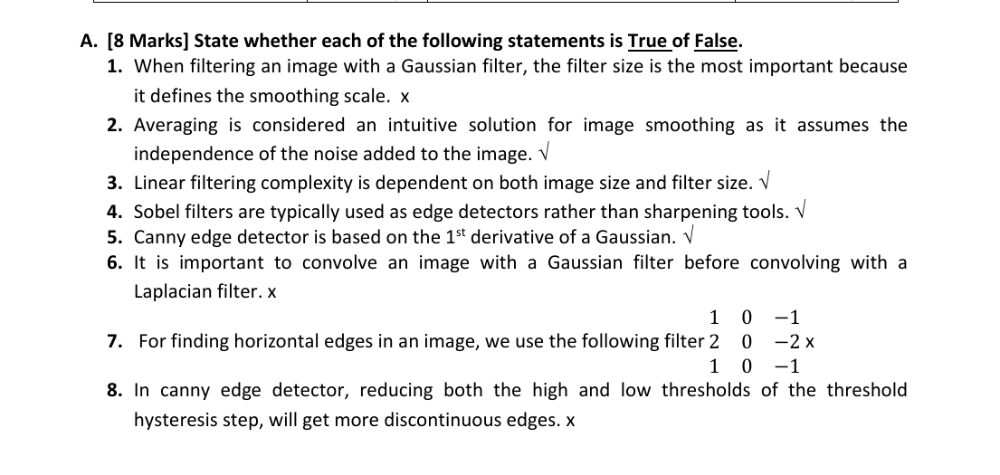

Question A — Eight True / False statements (8 marks)
Question (as printed)

Solution — verdict per statement
For Gaussian / Laplacian / Sobel / Canny statements, anchor yourself on three rules:
- For a Gaussian, the σ (not the kernel size) is what controls the smoothing scale — the size only needs to be big enough to hold ≈ ±3σ.
- A Sobel kernel has positive on one side, zero in the middle, negative on the other side. The zero column tells you which gradient direction is being measured: zero in the x-column → horizontal change → vertical-edge detector; zero in the y-row → vertical change → horizontal-edge detector.
- Canny uses the 1st derivative of a Gaussian, Marr–Hildreth uses the 2nd derivative (LoG). Don't confuse them.
| # | Statement (short) | Answer | Why |
|---|---|---|---|
| 1 | Gaussian filter size is the most important parameter (it defines the smoothing scale). | False | It's the σ that defines the smoothing scale. The size just has to be wide enough (~6σ) to hold the bell. |
| 2 | Averaging is intuitive because it assumes noise is independent. | True | If neighbouring pixels carry independent noise samples, averaging them lets the noise cancel out and the signal stays. |
| 3 | Linear-filter complexity depends on image size and filter size. | True | Cost = (#pixels) × (kernel cells) = O(M·N·k²). |
| 4 | Sobel is used as an edge detector, not a sharpener. | True | Sobel is a first-derivative kernel — its output highlights edges. Sharpening is done with Laplacian-based masks. |
| 5 | Canny is based on the 1st derivative of a Gaussian. | True | Canny smooths with a Gaussian then takes the first derivative (gradient magnitude + non-max suppression + hysteresis). |
| 6 | It's important to convolve with a Gaussian before a Laplacian. | False | Convolution is associative: G ∗ (L ∗ I) = (G ∗ L) ∗ I. The order doesn't matter mathematically — in practice we just merge them into the LoG kernel. |
| 7 | The kernel [[1,0,-1],[2,0,-2],[1,0,-1]] detects horizontal edges. | False | The zero column is in the middle of x → it measures the x-derivative → it detects vertical edges (changes left-to-right). Horizontal-edge Sobel has the zero row in the middle. |
| 8 | Lowering both Canny thresholds gives more discontinuous edges. | False | Lowering the thresholds lets more weak pixels survive and lets more of them get linked to strong ones — so you get longer, more continuous edges (and more noise). |
Pattern of answers: 1·F, 2·T, 3·T, 4·T, 5·T, 6·F, 7·F, 8·F.